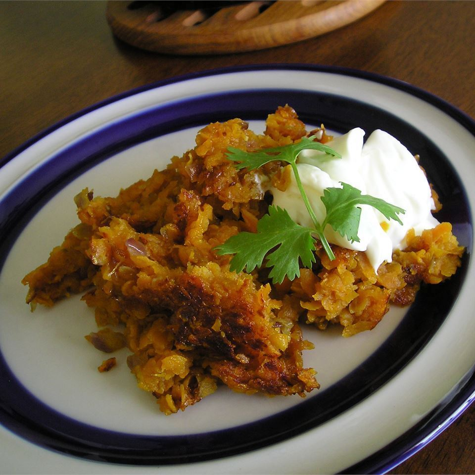

Sweet and Sassy Hashbrowns Recipe

Description
This recipe is for hashbrowns with a sweet and spicy twist. A dollpop of sour cream and garnish of fresh cilantro are excellent additions to this recipe.
This recipe was taken from allrecipes.com.
Ingredients
- 1 tablespoon butter
- 1 large sweet potato, scrubbed and shredded
- 1 onion, chopped
- 1/4 teaspoon chipotle chili powder
- 1/2 teaspoon garlic powder
- 2 tablespoons brown sugar
Steps
- Melt butter in a nonstick skillet over medium-high heat.
- Place shredded sweet potatoes and onion in the pan;cover and cook, stirring occasionally, until sweet potatoes are tender and onion is translucent, about 10 minutes.
- Stir in the chipotle chile powder, garlic powder, and brown sugar.
- Cook, uncovered, until potatoes are golden brown on the bottom, about 5 minutes.
- Turn and allow the potatoes to brown on the other side.